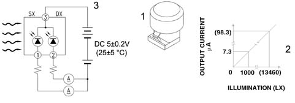
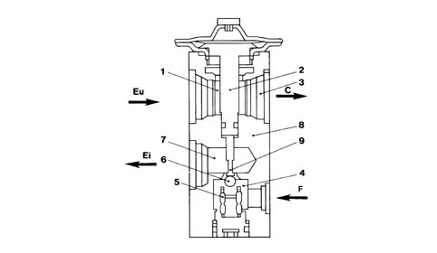
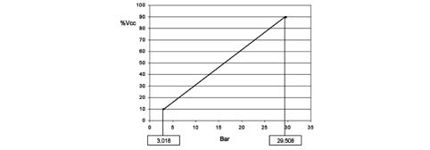
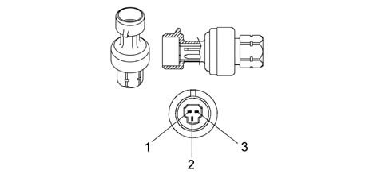
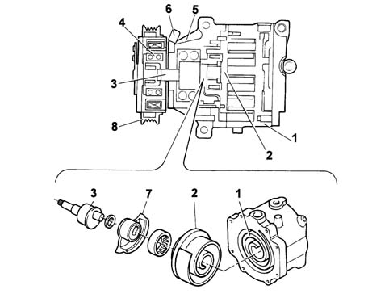
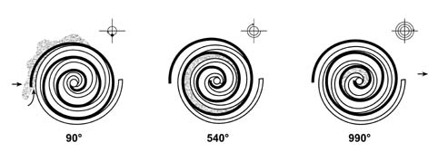
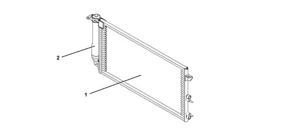

Introduction - AIR CONDITIONING CASING AND COMPONENTS
- Path
- Descriptions > 50 AUXILIARY UNITS > 5040 AIR CONDITIONING CASING AND COMPONENTS > Introduction - AIR CONDITIONING CASING AND COMPONENTS
- Kind
- system description
- Applies to
- all engines; all production periods
- Interactive page
- https://sloeber94.github.io/elrnDB-fPnd/en/#/2753482
Applies to: all engines; all production periods
The air conditioner casing, i.e. the plastic structure fastened to the facia mounting beam, is the same on both manual and automatic versions
The only difference between manual and automatic (with regard to the air conditioner casing) lies in the movement of mixer, distribution and rirculation flaps: by means of flexible cables on the manual and by means of electromechanical actuators on the automatic system.
Applies to: all engines; all production periods
The following table shows the components for each type of system.
COMPONENTS | MANUAL climate control system | AUTOMATIC climate control system |
|---|---|---|
Climate control node (NCL) | X | |
Electromechanical actuators | X | |
Compressor | X | X |
Expansion valve | X | X |
Heater radiator | X | X |
Evaporator | X | X |
Condenser | X | X |
Linear sensor | X | X |
Demister sensor | X | X |
Outside air temperature sensor | X | X |
Passenger compartment air temperature sensor | X | |
Mixed air temperature sensor | X | |
Solar radiation sensor | X | |
Pollen filter | X | X |
Passenger compartment fan | X | X |
Drier filter | X | X |
Applies to: all engines; all production periods
ACTUATORS
The flaps inside the automatic climate control system, i.e. air mixer, distribution and recirculation flaps, are moved by electromechanical actuators controlled by the NCL.
A motor with a 12 V supply inside the actuators controls the rotary movement of a drive pin which acts directly on the flap.
A potentiometer detects the actual position and provides feedback to the control unit.
The actuators are only present on the automatic version of the climate control system.
Applies to: all engines; all production periods
AIR DISTRIBUTION ACTUATOR
The air distribution actuator rotates the distribution flaps.
It is supplied at 12 V and can be turned clockwise or anticlockwise by reversing the polarity. A potentiometer detects the effective position and acts with feedback to the control unit checking the complete travel between the extreme positions.
It is fitted on the passenger side climate control system casing
Applies to: all engines; all production periods
AIR MIXER ACTUATOR
This turns the air mixer flaps
It is fitted on the passenger side climate control system
It receives a 12 V supply and if the polarity is reversed, it is possible to rotate it in a clockwise or an anti-clockwise direction. A potentiometer detects the effective position and acts with feedback to the control unit checking the complete travel between the extreme positions.
Applies to: all engines; all production periods
RECIRULATION ACTUATOR
This actuator manages the rotation of the flap in the two dynamic air and recirculation limit positions with no intermediate positions.
It is fitted in the vicinity of the dynamic air intake
It receives a 12 V supply and if the polarity is reversed, it is possible to rotate it in a clockwise or an anti-clockwise direction.
Applies to: all engines; all production periods
MIXED AIR TEMPERATURE SENSORS
Two temperature sensors on the automatic climate control system casingt send the climate control unit a signal describing the temperature of the air leaving the outlets. One sensor is located at the FLOOR outlets, the other is located near the facia central outlets.
The sensors are NTC type and their resistance is 10000 Ohm +/- 5% at a temperature of 25 ° C
Applies to: all engines; all production periods
SOLAR RADIATION SENSOR
The sensor is located on the upper part of the facia at the base of the windscreen
It converts light signals (lux or kcal/m2h) into a corresponding linear electrical signal to provide the control unit with a signal proportional to the electrical energy entering the passenger compartment via the windscreen due to the effect of solar radiation.
It is present only on the automatic version of the climate control system.
The sensor is a specific type of diode (photodiode) that can alter its rate of conduction according to the amount of light that strikes it;
When the system is managed in AUTO mode, the climate control system ECU (NCL) alters air temperature and distribution paramters to maintain the temperature requested by the user.

1 - Solar sensor 2 - Graph showing lighting - output current 3 - Solar sensor operating diagram
Applies to: all engines; all production periods
FROST SENSOR
The gas flow rate control system is operated by an electronic control unit which acts on the compressor solenoid valve according to the temperature of the evaporator, measured by means of an NTC type sensor.
This NTC defrosting sensor measures the evaporator sensor.
It is located inside the distributor unit, fitted directly onto the evaporator.
Under certain conditions, the evaporator temperature may drop so low that the condesate deposited on the evaporator surface freezes. This condition brings about a sudden drop in condenser efficiency. A frost-covered evaporator loses its ability to exchange heat with the air.
To prevent this situation occurring, when the signal generated by the defrosting sensor detects a frost danger, compressor operation is deactivated and hence also fluid circulation: for temperatures < 3.5° C, the compressor is deactivated, at temperatures > 5° C, the compressor is reactivated.
In the case of manually-controlled systems, the sensor is connected to a thermostat that is connected in turn to the Engine Control Node and manages compressor activation/deactivation.
If the system is automatic, the sensor is directly connected to the Climate Control Node which communicates wtih the Engine Control Node via the Body Computer. The Engine Control Node then manages compressor activation/dactivation.
Applies to: all engines; all production periods
OUTSIDE AIR TEMPERATURE SENSOR
This is an NTC sensor fitted to the lower edge of the right door mirror.
It is present on both manual and automatic version.
It supplies a signal proportional to the outdoor air temperature.
If the system is manual, the sensro sends its signal to the NQS which sends the signal to the NCM via the NBC. The NCM issues a compressor activation/deactivation enablement signal via the defroster sensor thermostat (see 5010).
If the system if automatic, the sensor sends its signal to the NQS, which forwards it to the NCL via the NBC. The NCL interprets the signal and communicates with the NCM, which issues compresor activation/deactivation enablement (see 5010).
Applies to: all engines; all production periods
PASSENGER COMPARTMENT AIR TEMPERATURE SENSOR
This NTC sensor informs the climate control system ECU about passenger compartment temperature and enables the system to correct climate control parameters to ensure the temperature set by the user is respected.
This sensor is present only on the automatic climate control system.
It is built into the climate control system ECU and fitted with a fan to prevent air standing inside and make the temperature reading as consistent wtih the true temperature as possible.
Applies to: all engines; all production periods
EXPANSION VALVE
The diagram below shows a section of the expansion valve and identifies the main components.

1, Fluid outlet duct from the evaporator 2, Heat sensitive element 3, To the compressor inlet connector 4, Pressurized fluid 5, Opposing spring 6, Ball and calibrated port 7, Expanded fluid (to the evaporator inlet connector) 8, Valve casing 9, Rod C, To the compressor F, From dehydrating filter Ei, Evaporator intake Eu, Evaporator outlet
Applies to: all engines; all production periods
EXPANSION VALVE
The tasks of this valve are to:
- Separates the high pressure circuit from the low pressure circuit;
- Expands the coolant (change from liquid state to gaseous state);
- Regulates the evaporation process (flow rate);
- Regulates the evaporation temperature;
- Protects the compressor from the coolant
The thermostatic expansion valve, fitted on the evaporator inlet/outlet ducts has the task of regulating the flow and expasion (fall in pressure) of the R134a fluid before it enters the evaporator.
The automatic regulation of the passage section for the gas inside the expansion valve is carried out by a sensitive bulb which, according to the temperature of fluid, suitably adjusts the size of the gas port acting on a special spring which moves a shutter, determining the extent of the expansion.
The increase in temperature at the evaporator outlet, measured by the bulb, causes the opening of the valve with a consequent increase in the flow rate of the fluid to the evaporator.
Conversely, at low temperatures, there is a reduction in the size of the gas port, causing a decrease in the gas flow.
The expansion valve is directly accessible from the engine compartment.
This type of expansion valve has two different routes for the coolant:
- Lower passage, from point (4), gas coming from the drier filter, to point (7), gas outlet towards the evaporator, containing the overheating spring (5) and the modulating element which, in this case, is the ball (6) housed in the calibrated duct.
- Upper passage, from point (1), gas coming from the evaporator, to point (3), gas outlet towards the compressor, containing the thermostatic sensor (2) which is connected to the upper part of the diaphragm and to the ball (6).
The flow rate control function is exerted through the movement of the ball (6), connected via the rod (9), to the thermostatic sensor (2).
The action of the ball (6) is opposed by the suitably calibrated spring (5) so that the coolant in the evaporator is in a gaseous state, without the presence of any liquid which, if drawn in by the compressor, could damage it.
The position of ball (6) depends on pressure differences acting on a diaphragm located inside sensor (2); this, in turn, depends on the evaporator refrigerant fluid outlet temperature (upper valve passage).
High temperatures of the gas leaving the evaporator (1) corresponding to conditions where large amounts of heat are dissipated cause the pressure inside the thermostatic sensor (2) to increase; this involves a movement of the rod (9) and the ball (6) connected to it which increases the passage section and, consequently, the coolant (7) flow rate.
The reverse takes place at low evaporator (1) gas outlet temperatures.
Applies to: all engines; all production periods
LINEAR PRESSURE SWITCH
The linear sensor controls the correct operation of the system, replacing the function of the quadrinary pressure switch. The sensor continuously and uniformly analyzes the pressure in the climate control system circuit providing the engine management control unit with the variations in pressure, in real time, making the management of the activation thresholds more flexible.
Each variation in pressure has a corresponding voltage signal used by the engine management control unit to activate the fan speed and switch off the compressor if the pressure increases or decreases beyond the permitted limits (safety function).
The operating range of the linear sensor goes from 3.018 bar to 29.508 bar according to the following pressure (Bar) - output voltage percentage (%Vcc) curve.

Applies to: all engines; all production periods
LINEAR PRESSURE SWITCH
The go ahead for the operation of the compressor and the regulation of the fan speed, dependent on the change in pressure, takes place in the following pressure range; above and below these values the compressor is deactivated for safety reasons to prevent damage to the system.
The diagram below illustrates the sensor pin out:

1, earth 2, supply voltage 3, output signal
Applies to: all engines; all production periods
COMPRESSOR
The circulation of the coolant fluid is allowed, altering the pressure level, using the mechanical energy from the engine via the pulley and the electro-magnetic clutch.
The compressor is the same on both manual and autamatic versions.
DENSO SCS06 compressor specifications:
- max. no. of continuous revs: 8450 rpm
- max. no. of non continuous revs: 10,000 rpm
- orbital rotation radius: 4.58 mm
- quantity of lubricant: 50 cm[sup3 ].
The compressor is orbital spiral type with a system that ensures that it is deactivated when the temperature of the evaporator gets close to freezing. The deactivation signal is governed by a demisting sensor fitted to the evaporator.
Orbital spiral compressors consist of a fixed scroll 1 (casing) and a moving scroll 2.
The movement of the camshaft (3) connected to the pulley creates a chamber whose volume is reduced during the rotation allowing compression.

1 Fixed scroll (casing) 2 Orbiting scroll 3 Camshaft 4 Ball bearing 5. Guard 6. Compressor electrical supply connection 7. Balancing mass 8. Pulley
Applies to: all engines; all production periods
COMPRESSOR
The contact between the compressor fixed scroll and the orbiting scroll creates a chamber whose volume gradually decreases when the rotating scroll rotates.
The compression chamber is alternately open to supply gas, closed to transport it and then open at the outlet connector to discharge the pressurized gas.
The pressure of the gas stored, defined by the volume of the two scrolls (one moving, one fixed), gradually increases until the gas reaches the centre zone where the operating pressure is reached; the gas is released here through the outlet connector to the condenser.
The sequence illustrates the three different gas compression stages: the compression takes place after three complete revolutions of the orbiting scroll.

Applies to: all engines; all production periods
COMPRESSOR
The adoption of these compressor, consisting of only two parts, has led to the following advantages:
- No gaskets are required
- There are no radial or axial leaks.
- Low charge loss due to the absence of internal pipes and valves.
- As the scrolls wear down, the side seal is improved.
- The absence of valves, knocking and pulsing reduces noise.
conversely, as there is no variable capacity compression, the presence of the frost sensor is required to prevent the evaporator from freezing.
On the manual system, the enablement request takes place by pressing the passenger compartment air speed selector. The signal reaches the Engine Management Node that activates the compressor if conditions permit.
On the automatic system, the enablement request is sent by pressing a dedicated key on the control panel. The signal reaches the Climate Control Node that sends the activation request to the Body Computer Node and then on to the Engine Management Node that turns on the compressor.
Applies to: all engines; all production periods
CONDENSER WITH BUILT-IN DEHYDRATING FILTER
The condenser is a heat exchanger located in front of the engine cooling radiator.
it acts as a condenser, i.e. convets coolant from a gaseous to a liquid state.
The coolant, in a gaseous state, passes through the condenser pipes and liquefies (at an average temperature of 60° C).
Air flows over the condenser When the car is at a standstill or in a traffic jam, air is set in motion by the engine radiator fan.
An insufficient heat exchange in the condenser increases the pressure in the system and causes the incomplete condensation of the fluid with a considerable reduction in the efficiency of the system.
A housing for the dehydrating filter is located on the left side of the condenser. This solution allows system layout to be optimised.

1 Condenser 2 Integral dehydrating filter
Applies to: all engines; all production periods
ELECTRIC FAN
On the manual system, the fan is operated by the passenger compartment air speed selector that sends a signal to a resistance divider that generates the different speeds. The resistance divider is fitted in the duct between dynamic air intake and the unit, to cool the unit.
On the automatic system, the fan is operated by dedicated buttons on the control panel that send the signal to the Climate Control System node, which generates different voltage values for the different speeds.
Applies to: all engines; all production periods
POLLEN FILTER
The pollen filter filters dust out of outside air entering the passenger compartment.
It is located inside the air conditioner casing and can be replaced on the car by removing the flap from the dedicated compartment, accessible from the passenger side.
The filter is present on both manual and automatic versions of the climate control system.